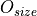
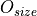

Meshing Module (-M)¶
Module -M is the module for meshing scalar and raster tessellations. Two meshing strategies are available. Free (or unstructured) meshing creates a conforming mesh into tetrahedral elements (triangular in 2D). Mapped (or structured) meshing generates a non-conforming mesh into regular hexahedral elements (quadrangular in 2D). Free meshing is carried out so that the elements have sizes as close as possible to the target value, and show high quality, that is, with shapes as close to equilateral as possible. The input file is a tessellation file (.tess) or a raster tessellation file (.tesr), as provided by module -T. Standard tessellations, multiscale tessellations, and periodic (or semi-periodic) tessellations are supported. Free meshing of raster tessellations works for 2D tessellations only. The output mesh can be written as a .msh file, which can be readily used by FEPX, or at other formats.
The target element size of the mesh can be specified through the element characteristic length (cl). It corresponds to the length of a 1D element, the length of the edge of a triangular or quadrangular element (2D), and the length of an edge of a tetrahedral or hexahedral element (3D). A relative characteristic length (rcl) can be used instead, whose value is relative to the average cell size and provides a medium number of elements. It is also possible to specify cl or rcl values on a per-cell basis, or different values along the three space directions.
For free meshing, mesh quality is ensured to the greatest extent possible using several approaches:
- Optimized meshing rules: the mesh properties are controlled by size parameters (options
-cl,-rcl, etc.) and a size gradient parameter used for 1D meshing (option-pl); - Multimeshing: each tessellation face and volume is meshed separately of the others, with several meshing algorithms, until a target mesh quality is reached. This is controlled by options
-meshqual*,-mesh2dalgoand-mesh3dalgo.
Note that, in general, tessellation regularization is also necessary to ensure good-quality meshing (see Tessellation Module (-T), option -regularization).
Remeshing can also be applied to generate a new, good-quality mesh from a mesh containing poor-quality elements. The variables defined on the parent mesh can be transported on the child mesh (options -transport*).
For mapped meshing, mesh cleaning options enable the removal of isolated elements or duplicate nodes, or the duplication of nodes that would create a singular behavior in simulations (options -clean, -dupnodemerge and -singnodedup).
Mesh partitioning allows for the division the mesh nodes and elements into several sets while minimizing the interfaces between them [1], as needed for parallel simulations with FEPX. Partitioning can return any number of partitions or be done according to a given parallel computer architecture (options -part*).
In the output mesh, the individual entities of the tessellations (the vertices, edges, faces and polyhedra) can be described by element sets (option -dim). Node sets of the vertices, edges and faces located on the boundary of the tessellation are also provided for prescribing the boundary conditions (option -nset). The surface element sets are also provided (option -faset). Element sets other than those corresponding to the tessellation cells can be defined (option -elset). The mesh order can be 1 or 2 (option -order). Statistical data can be obtained on the meshes (options -stat*).
The methods implemented for meshing are described in [CMAME2011].
Here is what a typical run of module -M looks like:
$ neper -M n10-id1.tess
======================== N e p e r =======================
Info : A software package for polycrystal generation and meshing.
Info : Version 4.0.0
Info : Built with: gsl|muparser|opengjk|openmp|nlopt|libscotch (full)
Info : Running on 8 threads.
Info : <https://neper.info>
Info : Copyright (C) 2003-2021, and GNU GPL'd, by Romain Quey.
Info : No initialization file found (`/home/rquey/.neperrc').
Info : ---------------------------------------------------------------
Info : MODULE -M loaded with arguments:
Info : [ini file] (none)
Info : [com line] n10-id1.tess
Info : ---------------------------------------------------------------
Info : Reading input data...
Info : - Reading arguments...
Info : Loading input data...
Info : - Loading tessellation...
Info : [i] Parsing file `n10-id1.tess'...
Info : [i] Parsed file `n10-id1.tess'.
Info : Meshing...
Info : - Preparing... (cl = 0.2321) 100%
Info : - 0D meshing... 100%
Info : - 1D meshing... 100%
Info : - 2D meshing... 100% (0.69|0.86/92%| 4%| 4%)
Info : - Fixing 2D-mesh pinches...
Info : - 3D meshing... 100% (0.89|0.91/100%| 0%| 0%)
Info : Searching nsets and fasets...
Info : Writing mesh results...
Info : - Preparing mesh...
Info : - Mesh properties:
Info : > Node number: 295
Info : > Elt number: 1063
Info : > Mesh volume: 1.000
Info : - Writing mesh...
Info : [o] Writing file `n10-id1.msh'...
Info : [o] Wrote file `n10-id1.msh'.
Info : Elapsed time: 1.127 secs.
========================================================================
Arguments¶
Prerequisites¶
-
-gmsh<binary>¶ Specify the Gmsh command or the path to the Gmsh binary (for meshing into triangle and tetrahedral elements).
Default value:
gmsh.
-
-tmp<directory>¶ Specify the path to the temporary directory (used by Gmsh).
Default value:
..
Input Data¶
In normal use, the input data is a tessellation file, a raster tessellation file or a mesh file.
-
<file_name1>[:<transformation1>][:<transformation2>]...,<file_name2>...¶ Specify the input file, which can be:
- a tessellation file (
.tess); - a raster tessellation file (
.tesr), with optional transformations, which can be:crop(<xmin>,<xmax>,<ymin>,<ymax>,<zmin>,<zmax>): crop a region of a raster tessellation, where<xmin>,<xmax>,<ymin>,<ymax>,<zmin>and<zmax>are the minimum and maximum positions alongx,yandz, respectively. For 2D raster tessellations, thezvalues can be omitted.rasterscale(<fact>)orrasterscale(<fact_x>,<fact_y>,<fact_z>): scale the number of voxels of a raster tessellation, where<fact>is the scaling factor that applies in the three directions, and<fact_x>,<fact_y>and<fact_z>are the scaling factors alongx,yandz, respectively.
- a mesh file (
.msh), for remeshing (in which case a tessellation file should preferably be loaded too), with an optional transformation:<file_name>: coordinates to load from a Position File.
Default value: -.
- a tessellation file (
It is also possible to load a mesh to be considered as output mesh (in contrast to loading it as input file). If the file contains meshes of dimensions lower than the tessellation’s dimension, they are used, and only higher-dimension meshes are computed. Use option -o to avoid overwriting the file.
-
-loadmesh<file_name>¶ Load a mesh from a Mesh File (.msh).
Default value: -.
Finally, it is possible to load a set of points. These points are used only for statistics, in option -statpoint.
-
-loadpoint<file_name>¶ Load points from a Position File.
Default value: -.
Meshing Options¶
-
-elttype<elt_type>¶ Specify the type of elements, which can be:
tri: triangular elements;quad: quadrangular elements;quad9: 9-node quadrangular elements;tet: tetrahedral elements;hex: hexahedral elements.
In 2D,
tetandhexare treated astriandquad, respectively.Default value:
tetin 3D andtriin 2D.
-
-clor -rcl <length> (secondary option)¶ Specify the absolute or relative characteristic lengths of the elements.
-rclis defined relative to the average cell size. The argument can be:- a real value;
- an expression based on the Tessellation Keys or Raster Tessellation Keys, which allows to define individual values. An example is
-rcl (body>0)?<val1>:<val2>, to mesh interior cells withrcl=<val1>and boundary cells withrcl=<val2>. file(<file_name>): individual values to load from a Data File.
Default value:
-rcl 1(which corresponds to averages of about 100 elements per cell in 3D and 64 in 2D).
-
-dim<dimension1>,<dimensions2>,...[:msh]¶ Specify the mesh dimension(s), which can be:
- an integer value between
0and3; inputdim: the dimension of the input data;all: all (0toinputdim);none: none.
Attention
The
.mshfile does not depend on this option and will always contain the meshes of all dimensions, unless:mshis used.Note
If a mesh dimension of 3 is requested while the input data is 2D, the 2D mesh is extruded into a 3D mesh (tetahedral elements). The extrusion length is equal to the typical (in-plane) element characteristic length.
With
-format geof, use1,inputdimto get the 1D mesh written as lisets.Default value:
inputdim.- an integer value between
-
-order<order>¶ Specify the mesh order, which can be:
1: linear-interpolation elements (2-node linear elements, 3-node triangular elements, 4-node quadrangular elements, 4-node tetrahedral elements and 8-node hexahedral elements);2: quadratic-interpolation elements (3-node linear elements, 6-node triangular elements, 8-node or 9-node quadrangular elements, 10-node tetrahedral elements and 20-node hexahedral elements).
Default value:
1.
-
-cl{ver,edge,face}or -rcl{ver,edge,face} <characteritic_length> (secondary options¶ Specify the absolute or relative characteristic lengths of the elements at the vertex, edge or face level (compared to options
-cland-rclapplying to the cells), which can be:default: the same value as the parent, upper-dimension entity;a real value;
an expression based on the Tessellation Keys, which allows to define individual values.
An example is
-rcl "(domface==<id>)?<val>:default, to get a finer mesh at domain surfaceid.file(<file_name>): individual values to load from a Data File.
Default value: -.
-
-pl<progression_factor> (secondary option)¶ Specify the progression factor for the element characteristic lengths, which corresponds to the maximum ratio between the lengths of two adjacent 1D elements ().
Deafult value:
2.
-
-clratio<val_x>:<val_y>:<val_z> (secondary option)¶ Specify the ratios between the
clvalues along thex,yandzdirections. For example,2:1:1leads to elements twice as long in thexdirection as in theyandzdirections.Default value:
1:1:1.
The following options define the multimeshing algorithm (for 2D and 3D free meshings). Multimeshing consists of using several meshing algorithms concurrently, for each face or polyhedron, until a minimum, target mesh quality is reached. The mesh quality factor,  , accounts for both the element sizes and aspect ratios. It is given by , where and  range from 0 (poor quality) to 1 (high quality), and is a factor equal to 0.8. Therefore, also ranges from 0 (poor quality) to 1 (high quality) [CMAME2011]. The minimum quality value can be modified using option
, accounts for both the element sizes and aspect ratios. It is given by , where and  range from 0 (poor quality) to 1 (high quality), and is a factor equal to 0.8. Therefore, also ranges from 0 (poor quality) to 1 (high quality) [CMAME2011]. The minimum quality value can be modified using option -meshqualmin. The values of and can be modified using options -meshqualexpr and -meshqualdisexpr. The value of the target mesh quality significantly influences meshing speed and output mesh quality. A value of 0 provides the fastest meshing while a value of 1 provides the best-quality meshing. The default value provides an effective balance. 2D and 3D meshings are achieved using Gmsh and Netgen (options -mesh2dalgo and -mesh3dalgo).
-
-meshqualmin<quality_value>¶ Specify the minimum target value of mesh quality,
, as defined by option -meshqualexpr.Default value:
0.9.
-
-meshqualexpr<quality_expression> (secondary option)¶ Specify the expression of mesh quality,
, as a function of and .Default value:
Odis^0.8*Osize^0.2.
-
-meshqualdisexpr<quality_expression> (secondary option)¶ Specify the expression of the mesh element distortion parameter, , as a function of the element distortion parameter .
Default value:
dis^(exp((dis^0.1)/(dis^0.1-1))).
-
-mesh2dalgo<algo1>,<algo2>,... (secondary option)¶ Specify the 2D meshing algorithm(s), which can be:
mead: MeshAdapt;dela: Delaunay;fron: Frontal.
According to multimeshing, the algorithms are used concurrently until the quality criterion is reached.
Default value:
mead,dela,fron.
-
-mesh3dalgo<mesh_algo1>:<opti_algo1>,<mesh_algo2>:<opti_algo2>,... (secondary option)¶ Specify the 3D meshing and optimization algorithms. The only meshing algorithm is
netg(Netgen), and the optimization algorithms can be:gmsh: Gmsh;netg: Netgen;gmne: Gmsh + Netgen;none: none.
According to multimeshing, the algorithms are used concurrently until the quality criterion is reached.
Default value:
netg:gmsh,netg:netg,netg:gmne.
-
-interface<interface_type> (secondary option)¶ Specify the type of interface meshing, which can be:
continuous: continuous mesh at interfaces with shared nodes between neighbor element sets (which are associated to the tessellation cells);discontinuous: discontinuous mesh at interfaces with distinct nodes for the neighbor element sets;cohesive: cohesive elements at interfaces joining the neighbor element sets.
In the case of a multiscale tessellation, it is possible to provide a different value for each scale using the
::separator (if fewer values than tessellation scales are provided, the last provided value is used for all higher scales).Default value:
continuous.
-
-mesh2dpinchfix<logical> (secondary option)¶ Apply 2D-mesh pinches correction after 2D meshing (recommended).
Default value:
1.
Raster Tessellation Meshing Options¶
Direct 2D raster tessellation meshing involves interface reconstruction, interface mesh smoothing and then remeshing. The following options enable the control of interface smoothing.
-
-tesrsmooth<smoothing> (secondary option)¶ Specify the method for smoothing the interface meshes reconstructed from a raster tessellation, which can be:
laplacian: Laplacian smoothing is an iterative method that modifies the coordinates of a node of a mesh using the coordinates of the connected nodes. At iteration , the position of a node, , is calculated from its previous position, , and the position of the barycenter of the neighboring nodes (weighted barycenter considering the inverse of the distance between the node and the neighbor), , as follows: . is an adjustable parameter (see option
, the position of a node, , is calculated from its previous position, , and the position of the barycenter of the neighboring nodes (weighted barycenter considering the inverse of the distance between the node and the neighbor), , as follows: . is an adjustable parameter (see option -tesrsmoothfact). The number of iterations is set by option-tesrsmoothitermax. There is no stop criterion, and so,itermaxwill always be reached.none: none.
Default value:
laplacian.
-
-tesrsmoothfact<fact> (secondary option)¶ Specify the factor used for the interface mesh smoothing (
 in option
in option -tesrsmooth).Default value:
0.5.
-
-tesrsmoothitermax<iter_number> (secondary option)¶ Specify the number of iterations used for interface mesh smoothing.
Default value:
5.
Mesh Cleaning Options¶
The following options are specific to mapped meshing of raster tessellations containing voids.
-
-clean<cleaning_level> (secondary option)¶ Specify the mesh cleaning level. Cleaning makes it so that the mesh is made of a set of connected elements by removing the elements that are not connected to the main skeleton according to a given criterion, which can be:
0: no cleaning;1: two elements should be considered connected to each other if they share at least a vertex:2: two elements should be considered connected to each other if they share at least a face.
Default value:
0.
-
-singnodedup<logical> (secondary option)¶ Duplicate singular nodes. A singular node belongs to several elements which share only a node or an edge which provides a singular behavior [2].
Duplicated nodes can be merged back using option
-dupnodemerge.Default value:
0.
-
-dupnodemerge<distance> (secondary option)¶ Merge duplicate nodes. Provide as argument the distance between nodes below which two nodes are merged.
Note that Neper does not generate meshes with duplicate nodes, except when
-singnodedupor-interfaceare used.Default value: -.
Transformation Options¶
-
-transform<transformation1>,<transformation2>,...¶ Apply successive transformations to a mesh, which can be:
translate(<dist_x>,<dist_y>,<dist_z>): translate by distances<dist_x>,<dist_y>and<dist_z>alongx,yandz, respectively;rotate(<axis_x>,<axis_y>,<axis_z>,<angle>): rotate about the center, by a given axis and angle (angle expressed in degrees);scale(<fact_x>,<fact_y>,<fact_z>): scale by<fact_x>,<fact_y>and<fact_z>alongx,yandz, respectively;smooth(<A>,<itermax>,<type>): smooth the interfaces of a mesh by Laplacian smoothing (use only if you know what you are doing). Laplacian smoothing is an iterative method that modifies the coordinates of a node using the coordinates of the neighboring nodes. At iteration, the position of a node, , is calculated from its previous position, , and the position of the barycenter of the neighboring nodes (weighted barycenter considering the inverse of the distance between the node and the neighbor), as follows: . itermaxiterations are applied.typedefines the nodes used for smoothing and can beallfor all nodes orinteriorfor interior nodes.explode(<fact>): produce a roughly “exploded” mesh for which elsets are apart from each other (or cohesive elements become thick). To be used in conjunction with-interface {discontinuous,cohesive}.<fact>is a factor controlling the distance between elsets.slice(<d>,<a>,<b>,<c>): slice a 3D mesh by the (oriented) plane of equation (yielding to a 2D mesh).
(yielding to a 2D mesh).
Default value: -.
Mesh Partitioning Options¶
Mesh partitioning is achieved using the libscotch library. The principle of mesh partitioning is to create partitions of the same size, in terms of nodes and elements, while minimizing the interfaces between them. This attempts to distribute an equal load to all computation units and minimizes communications between them, and therefore minimizes the total computation time of simulations. There are two available strategies for mesh partitioning. The first one creates partitions and arranges them independently of each other, while the second one consists of optimizing the size and arrangment of the partitions based on a given computer cluster architecture to minimize computation time further. For those clusters that are made of nodes containing several cores each, the communication time between cores on a common node is much lower than the communication time between cores of different nodes. To minimize the global communication time, partitions which are processed by cores of the same node can be grouped together (on modern architectures, the gain remains marginal). Partitioning is applied to the higher-dimension mesh and (for the sake of interfacing with FEPX) renumbers nodes and elements by ascending partition number. This can be managed using options -part*.
-
-part<part_number>|<part_architecture>¶ Specify the number of partitions or a computer cluster architecture. Using a number of partitions is generally sufficient. Using a computer architecture may lead to a slight performance increase but the total number of partitions must be a power of 2. An architecture can be specified in two ways:
<number_of_nodes>:: Number of nodes (or “processors”) and number of cores per node or processor. A ratio of 10 is considered between the computation time between cores located on different nodes and the one between cores of the same node.<file_name>: cluster architecture to load from a file and described at the libscotch format.
Default value: -.
-
-partmethod<part_method> (secondary option)¶ Specify the partitioning method, which can be:
scotch: libscotch partitioner;linear: linear partitioning based on the node and element numbers (not recommended).
Default value:
scotch.
Field Transport Options¶
-
-transport<entity_type1>:<data_type1>:<file_name1>,<data_type2>:<file_name2>,...¶ Transport data from a parent mesh to a child mesh. The parent mesh is the input mesh and the child mesh is the result mesh (created by remeshing or loaded with
-loadmesh).<entity_type>can benodeorelt, and<data_type>can beinteger<X>orreal<X>, where<X>is the data dimensionality, and<file_name>is the file containing the parent data.Nodal data are transported by interpolation using the shape functions (2D only). Elemental data are transported as specified by
-transporteltmethod.Default value: -.
-
-transporteltmethod<method> (secondary option)¶ Specify the method to transport elemental data from the parent mesh to the child mesh. For each element of the child mesh, its center,
 , is considered. The method can be:
, is considered. The method can be:distance: choose, for each element of the child mesh (of center), the element of the parent mesh whose center is the closest to ;location: choose the element belongs to.
Default value:
distance.
Output Options¶
-
-o<file_name>¶ Specify the output file name.
Default value: input file’s base name.
-
-format<format1>,<format2>,...¶ Specify the format(s) of the output file(s), which can be:
msh[:<encoding>]: native (Gmsh-style) mesh file, whereencodingcan beasciiorbinary(defaultascii);msh4: Gmsh version 4 mesh file;vtk: VTK mesh file;inp: Abaqus input file;geof: Z-set mesh file;sim: simulation directory;ori: orientation file (optional FEPX input);phase: group file (optional FEPX input);bcs: boundary condition file (optional FEPX input);per: periodicity file (see also option-performat);tess: tessellation file, where the tessellation is reconstructed from the mesh.
Default value:
msh.
-
-nset<nset1>,<nset2>,...¶ Specify the node sets to provide, which can be:
faces: domain faces;edges: domain edges;vertices: domain vertices;facebodies: interior of the domain faces;edgebodies: interior of the domain edges;all: all of the above node sets;<dom_entity_label>: label of a domain entity.- For a cubic domain, they are
{x-z}{0,1}: domain faces,{x-z}{0,1}{x-z}{0,1}: domain edges, and{x-z}{0,1}{x-z}{0,1}{x-z}{0,1}: domain vertices. - For a cylindrical domain they, are
z{0,1}for thezfaces andf{1,2,...}for the faces on the circular part of the domain. - For other domains, they are
f{1,2,...}for the faces.
The labels of edges and vertices are derived by concatenating those of their parent faces.
bodycan be appended to obtain only the interior nodes.- For a cubic domain, they are
none: none.
Default value:
facesin 3D andedgesin 2D.
-
-faset<faset1>,<faset2>,...¶ Specify the element surface meshes (edge meshes in 2D) to output, which can be:
faces: all domain faces;<dom_face_label>: individual faces (see option-nset);internal: internal faces (edges in 2D) as created by-interface discontinuous.none: none.
Default value:
none.
-
-elset<elset1>,<elset2>,... (secondary option)¶ Specify the element sets to output, which can be:
default: default element sets (those corresponding to the input tessellation cells);<elset_label>:<elset_definition>, where<elset_label>is a custom elset label and<elset_definition>is an expression defining the elements belonging to the elset defined from the variables provided in Mesh Keys.
Default value:
default.
-
-performat<format>¶ Specify the format of the
.peroutput file, which can be:msh;plain: plain format;geof: Z-set format.
Default value:
msh.
Post-Processing Options¶
The following options provide general statistics on the highest-dimension mesh (mesh), 0D mesh (mesh0d), 1D mesh (mesh1d), 2D mesh (mesh2d), 3D mesh (mesh3d) and cohesive-element mesh (meshco).
-
-stat{mesh,mesh{0-3}d,meshco}<key1>,<key2>,...¶ Provide statistics on the mesh. Available keys are described in Mesh Keys.
Default value: -.
File extension:
.stmesh,.stmesh{0-3}d,.stmeshco.
The following options provide statistics on the nodes (nodes), highest-dimension elements (elt) and element sets (elset), 0D elements (elt0d) and element sets (elset0d), 1D elements (elt1d) and element sets (elset1d), 2D elements (elt2d) and element sets (elset2d), 3D elements (elt3d) and element sets (elset3d), cohesive elements (eltco) and element sets (elsetco), and points (point).
-
-stat{node,elt,elt{0-3}d,elset,elset{0-3}d,eltco,elsetco}<key1>,<key2>,...¶ Provide statistics on the nodes, elements or elsets. Available keys are described in Mesh Keys.
Default value: -.
File extension:
.stnode,.stelt,.stelt{0-3}d,.stelset,.stelset{0-3}d,.steltco,.stelsetco.
-
-statpoint<key1>,<key2>,...¶ Provide statistics on points. The points must be loaded with option
-loadpoint. Available keys are described in Point Keys.Default value: -.
File extension:
.stpoint.
Advanced Options¶
These advanced options set running conditions for the meshing libraries (2D and 3D meshing).
-
-mesh3dclreps<tolerance> (secondary option)¶ Specify the relative tolerance on the average element characteristic length of each cell (compared to
cl), which can be:- a real value;
- an expression based on the variables defined in Tessellation Keys;
<file_name>: values from a Data File.
The average element characteristic length is corrected iteratively, and so this is a highly CPU-sensitive option.
Default value:
0.02.
-
-mesh{2,3}dmaxtime<time> (secondary option)¶ Specify the maximum processing time allowed to the meshing library for meshing a tessellation face or polyhedron (in seconds).
Default value:
1000.
-
-mesh{2,3}drmaxtime<relative_time> (secondary option)¶ Specify a factor used to determine the maximum processing time allowed to the meshing library for meshing a tessellation face or polyhedron. This option is similar to
-mesh2dmaxtime, but the actual maximum time is the product of the maximum processing time of the previous meshings by the value provided in argument.Default value:
100.
-
-mesh{2,3}diter<iter_number> (secondary option)¶ Specify the maximum number of 2D meshing attempts for a particular face or polyhedron (in the rare case of failure).
Default value:
3.
Output Files¶
Mesh¶
.msh: mesh file as described in Mesh File (.msh);.msh4: Gmsh version 4 mesh file;.vtk: VTK file;.inp: Abaqus input file;.geof: Z-set file;.ori: orientation file (optional FEPX file). It contains the$ElsetOrientationsand$ElementOrientationssections of the.mshfile;.phase: group file (optional FEPX file). It contains the$Groupssection of the.mshfile;.bcs: boundary conditions file (optional FEPX file);.per: periodicity file.
Interfaces¶
- File
.intl. For each 2D interface, the file provides (one 2D interface per line) the labels of the two element sets of the interface.
Statistics¶
Statistics files are provided for nodes, elements, element sets and points. They are formatted with one entity per line. Each line contains the data specified to the corresponding -stat option and described in Mesh Keys.
.stnode: node statistics file;.stmesh: (highest-dimension) mesh statistics file;.stelt: (highest-dimension) element statistics file;.stelset: (highest-dimension) element set statistics file;.stmesh0d: 0D mesh statistics file;.stmesh1d: 1D mesh statistics file;.stmesh2d: 2D mesh statistics file;.stmesh3d: 3D mesh statistics file;.stmeshco: Cohesive-element mesh statistics file;.stelt0d: 0D element statistics file;.stelt1d: 1D element statistics file;.stelt2d: 2D element statistics file;.stelt3d: 3D element statistics file;.stelset0d: 0D elset statistics file;.stelset1d: 1D elset statistics file;.stelset2d: 2D elset statistics file;.stelset3d: 3D elset statistics file;.stpoint: point statistics file.
Examples¶
Below are some examples of use of neper -M.
Mesh tessellation
n100-id1.tess:$ neper -M n100-id1.tess
Mesh 2D raster tessellation
n100-id1.tesr:$ neper -M n100-id1.tesr
Mesh tessellation
n100-id1.tesswith a mesh size of rcl = 0.5 and in 2nd-order elements:$ neper -M n100-id1.tess -rcl 0.5 -order 2
Mesh tessellation
n100-id1.tesswith small elements for the interior cells and bigger elements for the boundary cells:$ neper -M n100-id1.tess -rcl "body!=0?0.2:0.5"
Remesh mesh
n150_def.msh(comprising poor-quality elements) into a clean, new mesh. Transport the scalar data of filen150_def.datafrom the deformed mesh to the new mesh:$ neper -M n150.tess,n150_def.msh -transport elt:real1:n150_def.data -rcl 0.5 -o n150_new
Mesh tessellation
n100-id1.tessand divide the mesh into 8 partitions:$ neper -M n100-id1.tess -part 8
Mesh tessellation
n100-id1.tessinto regular hexahedral elements (non-conformal mesh):$ neper -M n100-id1.tess -elt hex
Mesh tessellation
n100-id1.tessand get, for each element, its radius ratio and its volume:$ neper -M n100-id1.tess -statelt rr,vol
Mesh tessellation
n100-id1.tessand get the number of nodes and elements of the mesh:$ neper -M n100-id1.tess -statmesh nodenb,eltnb
References¶
| [CMAME2011] | (1, 2) R. Quey, P.R. Dawson and F. Barbe, Large-scale 3D random polycrystals for the finite element method: Generation, meshing and remeshing, Comput. Methods Appl. Mech. Engrg., vol. 200, pp. 1729-1745, 2011. |
| [1] | Each partition being assigned to a computation core in the finite element calculation, the minimization of the interfaces between the partitions is done in terms of the number of necessary communications between computation cores. |
| [2] | In Mechanics, it corresponds to imposing a common displacement while the point can carry no stress, and, in Thermics, it corresponds to imposing a given temperature at a particular location shared by two bodies while the location can carry no heat flux. When such a node is duplicated, each body has its own node and the singular behavior disappears. |